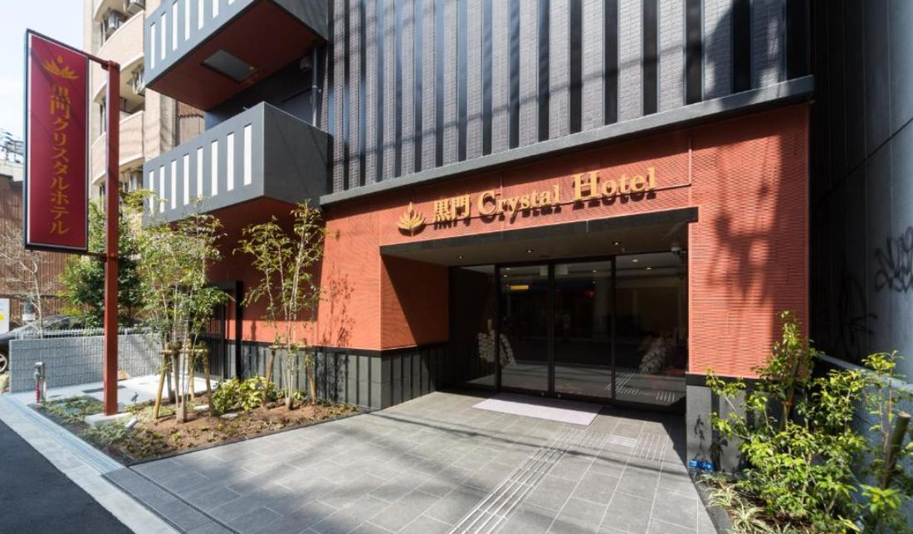
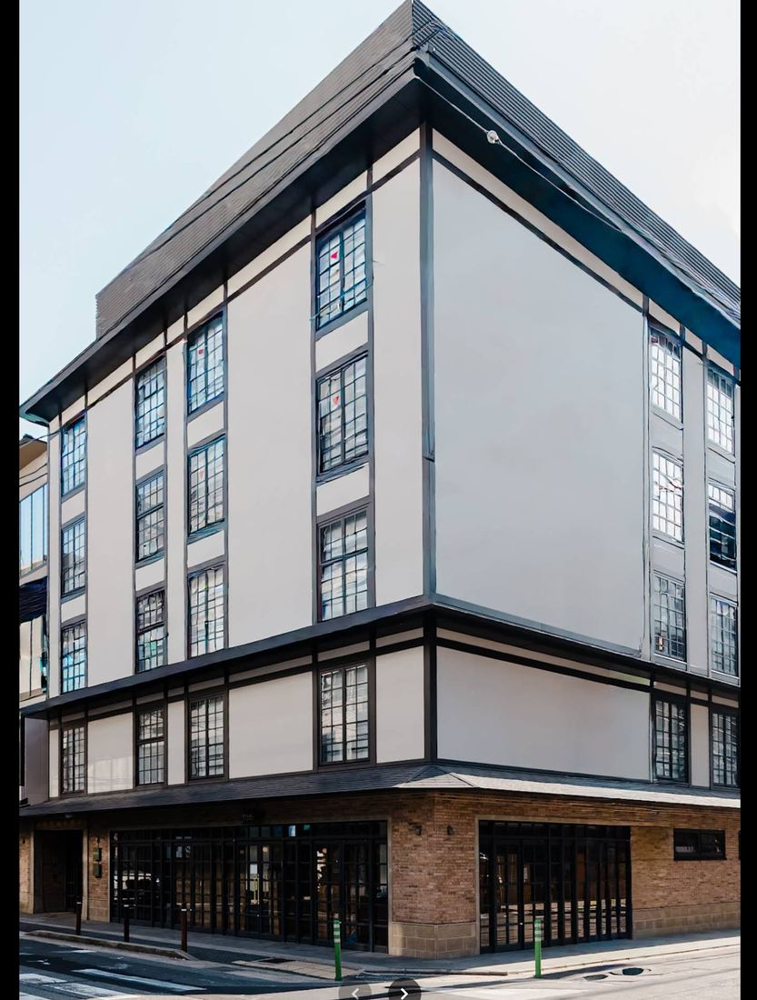
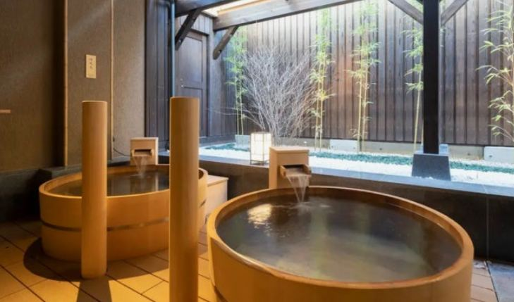

확정
후보
예약 필요
주변 추천
그날의 순서
날짜를 고르고 지도의 번호를 누르면 그날 어디서 무엇을 하는지, 이동은 어떻게 하는지 바로 볼 수 있어. 아래 메뉴에서 경비·준비물·예약 현황도 언제든 꺼내 볼 수 있어.



2인 기준 · 환율 100엔 = 870원 · 쇼핑비 각출 제외
결제 완료
| 항공권 (인당 34만 × 2) | 680,000 |
| 구로몬 크리스탈 호텔 | 160,000 |
| 키오리 무로마치 (2박) | 540,000 |
| 우메코지 카덴쇼 (온천) | 390,000 |
| USJ 패키지 (입장권·밴드·조이패스·익스프레스7) | 780,000 |
| 팀랩 바이오보텍스 2장 | 70,000 |
| 소계 | 2,620,000원 |
현지에서 더 쓸 돈
| 숙박세 (교토 ¥3,600 · 오사카 면세) | 31,000 |
| 교통비 (라피트·하루카·JR·지하철) | 167,000 |
| 식비 (¥132,000 · 넉넉하게) | 1,148,000 |
| 코코네 페어 힐링코스 (¥13,000) | 113,000 |
| 소계 | 1,459,000원 |
| 총합 | 약 4,079,000원 |
| 1인당 | 약 204만원 |
출발 전에 챙길 것
돈 · 서류
짐
빨간 항목은 아직 안 된 것
아직 안 됨
해두면 좋은 것 / 완료
보기 · 소리
이 자료는 동하와 아림 둘이서 짠 여행 계획이에요. 우리 취향대로 짠 동선이라 오사카 주요 관광지와는 다소 상이한 부분이 있으니, 오사카가 처음이신 분들은 참고만 해주세요.